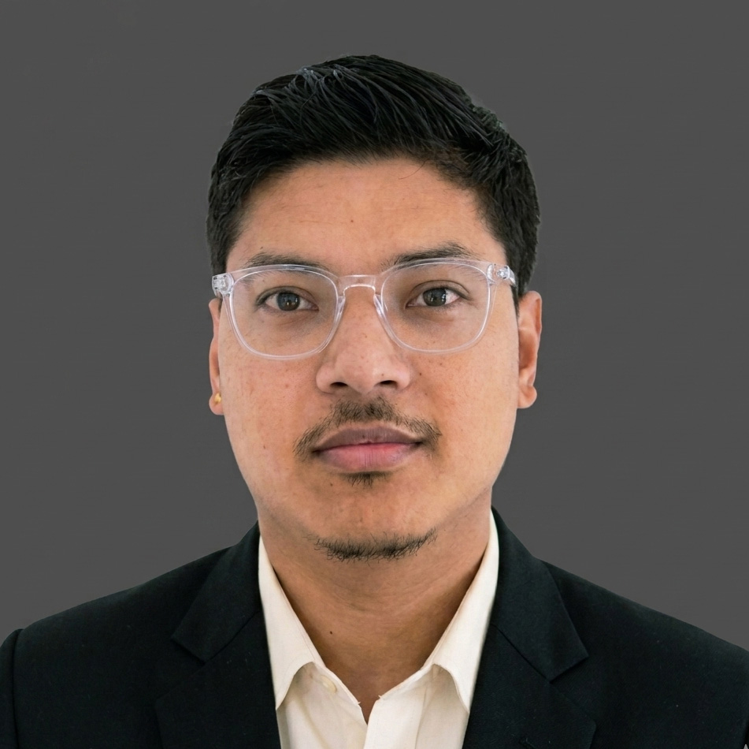

Dharahara Reconstruction
Major heritage reconstruction involving structural and architectural works, planning, procurement support, site coordination, quality, safety, and progress documentation.
Read the project reflectionSydney, Australia · Civil Engineering
Connecting site experience, construction planning, and clear project information—from drawings to delivery.
8+ years of contractor-side experience. Currently studying a Master of Construction Management at CQUniversity Australia.

About me
I am a Sydney-based civil engineer with experience in site supervision, construction planning, project coordination, and documentation. I am pursuing Project Engineer and Assistant Project Manager opportunities that combine practical site experience with Australian construction knowledge.
My work spans site inspections, quantity take-offs, bar bending schedules, payment claims, resource-loaded schedules, procurement support, and coordination with consultants, clients, contractors, and site teams.
I value safe delivery, accurate records, clear communication, and practical problem-solving.
From design to project delivery
Follow my journey from residential design to major construction delivery. Hover over a milestone, focus it with your keyboard, or select it to explore the Situation, Task, Action, and Result.
Dec 2015 – Jun 2016
Bijaya Engineering Consultancy Pty Ltd
Residential design and documentation
Explore STAR dutiesJun 2016 – Dec 2016
Department of Urban Development and Building Construction
Earthquake-resistant building support
Explore STAR dutiesDec 2016 – Sep 2018
Lama-Raman JV · Raman Construction Pty Ltd
Dharmashala Building and Allied Works
Explore STAR dutiesOct 2018 – May 2025
GIETC-Raman JV · Raman Construction Pty Ltd
Dharahara Reconstruction
Explore STAR dutiesCircular images are project illustrations, not site photographs. Result statements describe résumé-supported outputs and contributions; no unverified performance figures are claimed.
Selected construction projects
Major heritage reconstruction involving structural and architectural works, planning, procurement support, site coordination, quality, safety, and progress documentation.
Read the project reflectionA 400-bed building project for the Embassy of India. My site engineering work included surveying, setting out, supervision, measured quantities, payment claims, and reporting.
Explore the role in STAR formatCivil Engineer Diary
Reflections on the planning, people, information, and decisions behind construction delivery.
Read the DiaryEngiSaan Studio
Explore the technical and creative side of my portfolio.
Visit the StudioLet's connect
Open to Project Engineer and Assistant Project Manager opportunities in Sydney, and conversations about civil engineering, construction management, and digital project delivery.